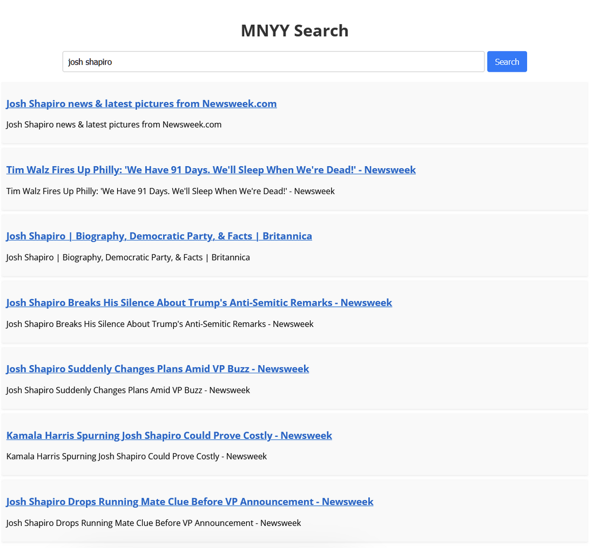
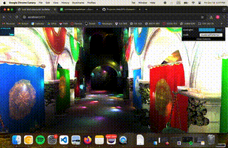
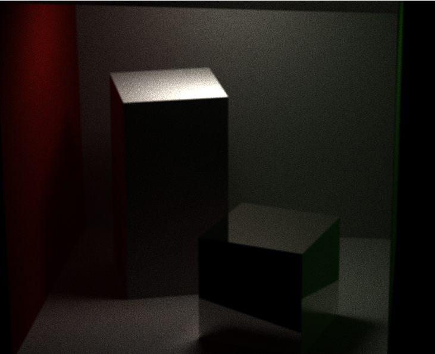
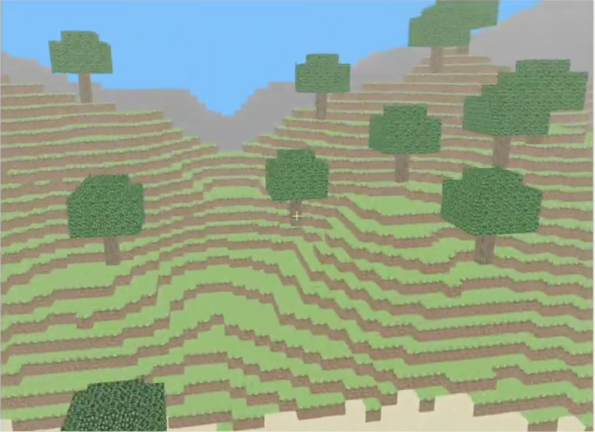

Projects

MNYY Search
Fall 2024
- Built complete search engine system including crawler (1M+ pages), indexer, and frontend, written entirely in Java
- Implemented tf-idf ranking and PageRank algorithm for result relevance
- Designed scalable Key-Value Store (KVS) and Flame worker coordinator system enabling distributed sharding
- Successfully deployed and tested on AWS infrastructure

WebGPU Path Tracer + NPR Stylizer + Cloth Simulation
Fall 2024
- Developed a WebGPU-based path tracer with non-photorealistic rendering and cloth simulation using WGSL and TypeScript
- Inspired by recent SIGGRAPH research; integrated BVH acceleration and scene loading
- Try it in browser: Live Demo (requires Chrome with WebGPU support)

WebGPU Clustered Forward+ and Deferred Shader
Fall 2024
- Iteratively implemented three lighting techniques: naive, Forward+, and clustered deferred, demonstrating performance improvements at each stage
- Written entirely in WebGPU for browser-based execution
- Try it in browser: Live Demo (requires Chrome with WebGPU support)

CUDA Path Tracer
Fall 2024
- Developed advanced path tracer in CUDA with features including GLTF scene loading, depth of field, anti-aliasing
- Implemented Russian roulette path termination and support for specular + diffuse materials
- View project: GitHub Repository

Mini Minecraft
Spring 2023
- Developed Minecraft clone using C++ and OpenGL
- Implemented multithreaded terrain generation with procedural cave systems and terrain features
- Optimized rendering through efficient mesh generation, player simulation, and physics systems
PennOS
Spring 2023
- Developed a Unix-like operating system with priority scheduling, filesystem, and shell
- Wrote extensive documentation, worked collaboratively
- Continuously integrated with filesystem team